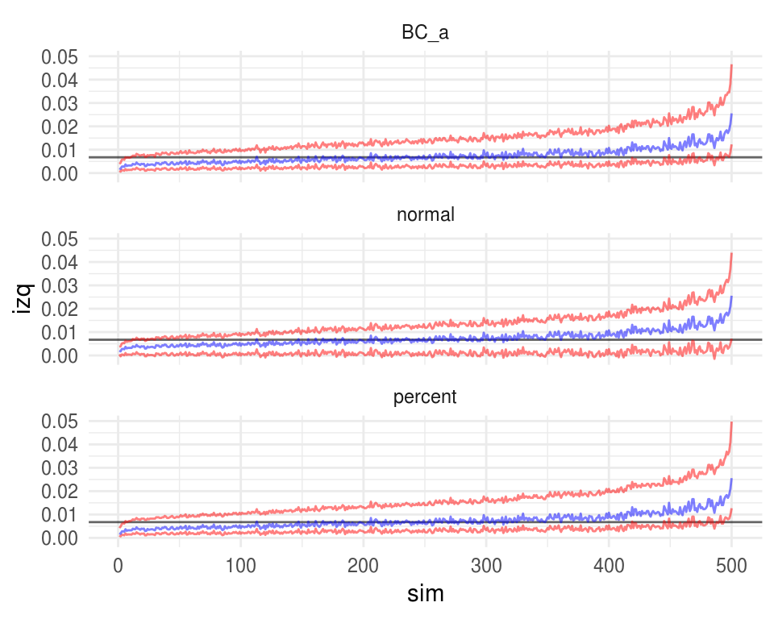
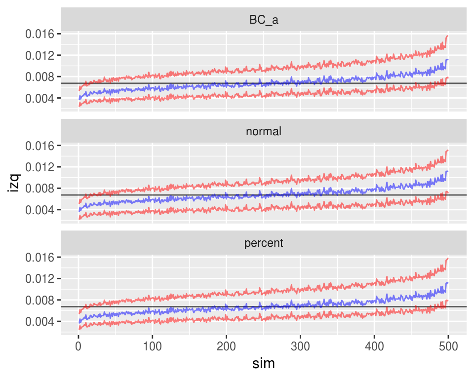

6-Cobertura de intervalos de confianza
En este problema realizarás un ejercicio de simulación para comparar la
exactitud de distintos intervalos de confianza. Simularás muestras de
una distribución Poisson con parámetro \(\lambda=2.5\) y el estadístico de interés
es \(\theta=exp(-2\lambda)\).
Sigue el siguiente proceso:
Genera una muestra aleatoria de tamaño \(n=60\) con distribución \(Poisson(\lambda)\), parámetro \(\lambda=2.5\) (en R usa la función
rpois()).Genera \(10,000\) muestras bootstrap y calcula intervalos de confianza del 95% para \(\hat{\theta}\) usando 1) el método normal, 2) percentiles y 3) \(BC_a\).
Revisa si el intervalo de confianza contiene el verdadero valor del parámetro (\(\theta=exp(-2\cdot2.5)\)), en caso de que no lo contenga registra si falló por la izquierda (el límite inferior \(exp(-2.5*\lambda)\)) o falló por la derecha (el límite superior <\(exp(-2.5*\lambda)\)).
- Repite el proceso descrito 1000 veces y llena la siguiente tabla:
| Método | % fallo izquierda | % fallo derecha | Cobertura | Longitud promedio |
|---|---|---|---|---|
| Normal | ||||
| Percentiles | ||||
| BC_a |
La columna cobertura es una estimación de la cobertura del intervalo basada en las simulaciones, para calcularla simplemente escribe el porcentaje de los intervalos que incluyeron el verdadero valor del parámetro. La longitud promedio es la longitud promedio de los intervalos de confianza bajo cada método.
Realiza una gráfica de páneles, en cada panel mostrarás los resultados de uno de los métodos (normal, percentiles y BC_a), el eje x corresponderá al número de intervalo de confianza (\(1,...,1000\)) y en el vertical graficarás los límites de los intervalos, es decir graficarás 2 líneas (usa
geom_line()) una corresponderá a los límites inferiores de los intervalos, y otra a los superiores.Repite los incisos a) y b) seleccionando muestras de tamaño \(300\).
Nota: Un ejemplo en donde la cantidad \(P(X=0)^2 = e^{-\lambda}\) es de interés es como sigue: las llamadas telefónicas a un conmutador se modelan con un proceso Poisson y \(\lambda\) es el número promedio de llamadas por minuto, entonce \(e^{- \lambda}\) es la probabilidad de que no se reciban llamadas en 1 minuto.
Solución
lambda <- 2.5
calcula_intervalos <- function(n = 60, B = 10000) {
x <- rpois(n, lambda)
theta <- exp(-2 * mean(x))
theta_b <- rerun(B, sample(x, size = n, replace = TRUE)) %>%
map_dbl(~exp(-2 * mean(.)))
bca <- bootstrap::bcanon(x, nboot = B, theta = function(y) exp(-2 * mean(y)),
alpha = c(0.025, 0.975))$confpoints[, 2]
intervalos <- data_frame(metodo = c("normal", "percent", "BC_a"),
izq = c(theta - 1.96 * sd(theta_b), quantile(theta_b, probs = 0.025),
bca[1]),
der = c(theta + 1.96 * sd(theta_b), quantile(theta_b, probs = 0.975),
bca[2])
)
list(theta = theta, intervalos = intervalos)
}set.seed(83789173)
n_sims <- 5000
# sims_intervalos_60 <- rerun(n_sims, calcula_intervalos())
# write_rds(sims_intervalos_60, path = "sims_intervalos_60.rds")
sims_intervalos_60 <- read_rds("data/sims_intervalos_60.rds")
sims_intervalos_60 %>%
map_df(~.$intervalos) %>%
group_by(metodo) %>%
summarise(
falla_izq = 100 * sum(izq > exp(-2 * lambda)) / n_sims,
falla_der = 100 * sum(der < exp(-2 * lambda)) / n_sims,
cobertura = 100 - falla_izq - falla_der,
long_media = mean(der - izq),
long_min = min(der - izq),
long_max = max(der - izq)
)## # A tibble: 3 x 7
## metodo falla_izq falla_der cobertura long_media long_min long_max
## <chr> <dbl> <dbl> <dbl> <dbl> <dbl> <dbl>
## 1 BC_a 2.26 2.8 94.9 0.0117 0.00258 0.0356
## 2 normal 0.1 4.88 95.0 0.0126 0.00276 0.0380
## 3 percent 3.1 2 94.9 0.0124 0.00265 0.0381intervalos_muestra <- sims_intervalos_60 %>%
map_df(~.$intervalos) %>%
mutate(sim = rep(1:n_sims, each = 3)) %>%
filter(sim <= 500) %>%
mutate(
sim_factor = reorder(sim, der - izq),
sim = as.numeric(sim_factor)
)
thetas <- sims_intervalos_60 %>%
map_dbl(~.$theta)
thetas_df <- data_frame(thetas = thetas, sim = 1:n_sims) %>%
mutate(
sim_factor = factor(sim,
levels = levels(intervalos_muestra$sim_factor)),
sim = as.numeric(sim_factor)
) %>%
dplyr::filter(sim <= 500)
ggplot(intervalos_muestra) +
geom_hline(yintercept = exp(-2 * 2.5), alpha = 0.6) +
geom_line(aes(x = sim, y = izq), color = "red", alpha = 0.5) +
geom_line(aes(x = sim, y = der), color = "red", alpha = 0.5) +
geom_line(data = thetas_df, aes(x = sim, y = thetas), color = "blue",
alpha = 0.5) +
facet_wrap(~ metodo, ncol = 1)
set.seed(83789173)
# sims_intervalos_300 <- rerun(n_sims, calcula_intervalos(n = 300))
# write_rds(sims_intervalos_300, path = "sims_intervalos_300.rds")
sims_intervalos_300 <- read_rds("data/sims_intervalos_300.rds")
sims_intervalos_300 %>%
map_df(~.$intervalos) %>%
group_by(metodo) %>%
summarise(
falla_izq = 100 * sum(izq > exp(-2 * lambda)) / n_sims,
falla_der = 100 * sum(der < exp(-2 * lambda)) / n_sims,
cobertura = 100 - falla_izq - falla_der,
longitud = mean(der - izq),
long_media = mean(der - izq),
long_min = min(der - izq),
long_max = max(der - izq)
)## # A tibble: 3 x 8
## metodo falla_izq falla_der cobertura longitud long_media long_min
## <chr> <dbl> <dbl> <dbl> <dbl> <dbl> <dbl>
## 1 BC_a 2.2 2.3 95.5 0.00491 0.00491 0.00246
## 2 normal 0.82 3.72 95.5 0.00498 0.00498 0.00249
## 3 perce… 2.48 1.92 95.6 0.00496 0.00496 0.00248
## # ... with 1 more variable: long_max <dbl>intervalos_muestra <- sims_intervalos_300 %>%
map_df(~.$intervalos) %>%
mutate(sim = rep(1:n_sims, each = 3)) %>%
filter(sim <= 500) %>%
mutate(
sim_factor = reorder(sim, der - izq),
sim = as.numeric(sim_factor)
)
thetas <- sims_intervalos_300 %>%
map_dbl(~.$theta)
thetas_df <- data_frame(thetas = thetas, sim = 1:n_sims) %>%
mutate(
sim_factor = factor(sim,
levels = levels(intervalos_muestra$sim_factor)),
sim = as.numeric(sim_factor)
) %>%
dplyr::filter(sim <= 500)
ggplot(intervalos_muestra) +
geom_hline(yintercept = exp(-2 * 2.5), alpha = 0.6) +
geom_line(aes(x = sim, y = izq), color = "red", alpha = 0.5) +
geom_line(aes(x = sim, y = der), color = "red", alpha = 0.5) +
geom_line(data = thetas_df, aes(x = sim, y = thetas), color = "blue",
alpha = 0.5) +
facet_wrap(~ metodo, ncol = 1)